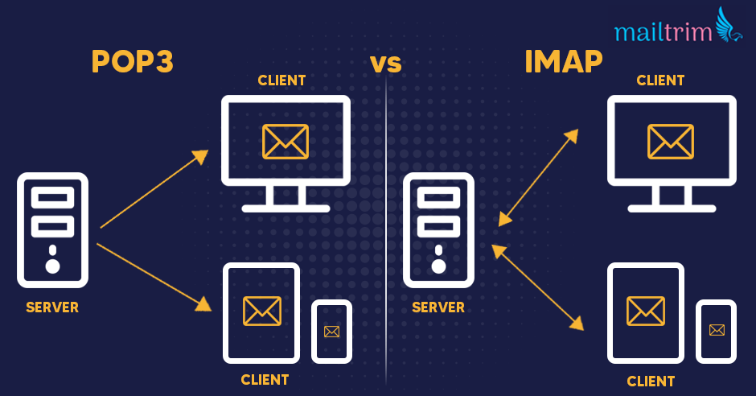

Created by Mark Crispin at Stanford in the 1980s, then spent another 20 years working on the IMAP specs and reference implementation.
IMAP specification comes in the form of a “Request for Comments” or RCFs which is a memo describing how to implement the protocol that has been a standard by the internet Engineering Task Force.
The current RFC that describes IMAP is RFC3501 which was published in 2003
Older protocol called POP – download mail to your local device/machine and delete from the server.
Disadvantage: hard to manage mails if using multiple computers.
Original version of IMAP is lost to history and IMAP2 is the first released in 1988 that made it into the standards
Only supported “online” operation, meaning it assumed your client is connected to the server when reading or modifying messages.
Disadvantage: Had to make sure to have a reliable connection before checking the mail.
Because message was only identified by a “sequence” number and the numbers were not persistent across client sessions.
IMAP4 was introduced in 1994
Persistent message identifiers was added called UID.
Can elaborate on UIDs.
The basic IMAP protocol has remained unchanged since 1996
New features were introduced and added.

Difference between IMAP and POP3
The main two protocols to set up an email client or app.
POP stands for Post Office Protocol, is older than IMAP. It allows user to download emails from a remote server for permanent storage. There were revisions of POP and the current version is POP3.